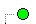
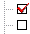

间隙浏览器标志
间隙浏览器相关的标志如下所示：
-
间隙集 — 包含名称、版本号和默认间隙区域
-
 干涉 — 包含最后一次分析的干涉结果
干涉 — 包含最后一次分析的干涉结果 -
已忽略 — 包含分析中要忽略的对象对(您可以移动下一分析要忽略的对象对到此文件夹)
-
分析例外 — 仅在分析中有相交失败、未加载实体时出现。(包含上次分析中由于诸如未加载实体或相交失败而未分析的对象对)
-
列表 — 包含分析中检查的组件。(依据您在间隙属性对话框中的设置，您可能有一个列表 1与列表 2文件夹，或仅有列表 1文件夹)
-
要检查的附件对 — 包含任意可能由排除准则排除的手动添加的对象对
-
单位子装配 — 包含您想要作为一个单位检查的子装配。(子装配的内部干涉在此检查中忽略)
-
检查的或未检查的研究框 — 描述那些干涉正在被检查，哪些未被检查
|
注释 |
当使用间隙浏览器时，您可以访问功能来进一步分析任意干涉。其它分析功能，显示透明度和剖切可帮助分离任意干涉问题。 |